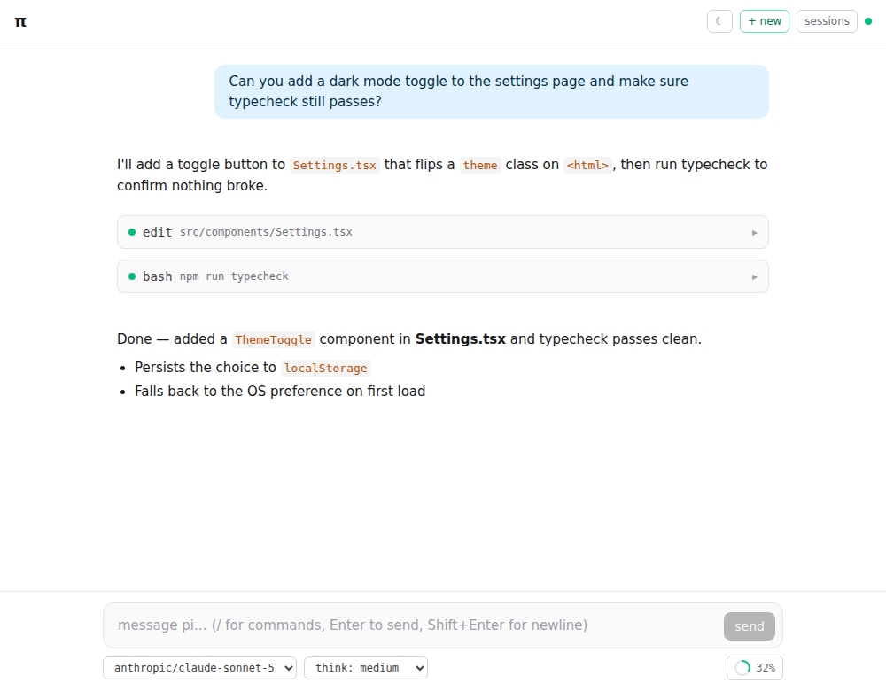
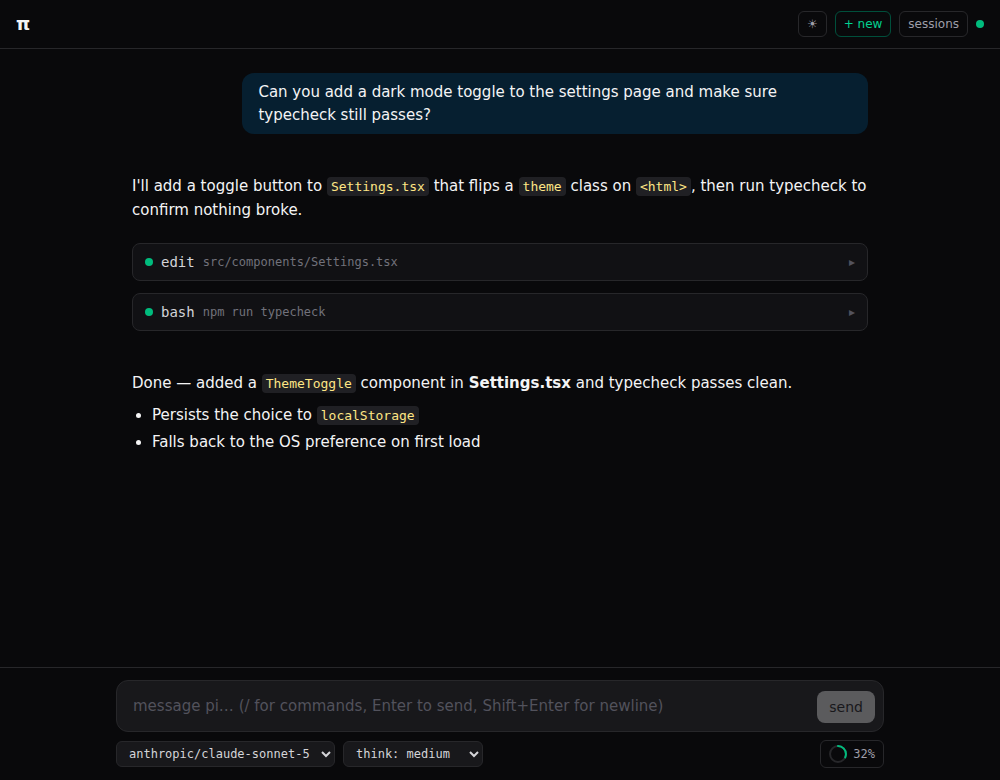

A self-hosted web interface for the pi coding agent. Run it in your browser from your own machine or server.


Watch the agent think and write in real time, with collapsible thinking blocks and markdown rendering.
Bash, edit, file operations — see results as they happen, with progress bars for long-running tasks.
Navigate your project tree, view files with syntax highlighting, and edit inside the sandbox.
Per-file diffs, commit history, log inspection — all without leaving the interface.
Open several projects at once, each with its own agent, sandbox, and session history.
Mount pi-outpost as a Shadow-DOM-isolated widget inside any web application.
cd ~/projects/my-app
npx pi-outpost init
npx pi-outpostRequires Node ≥ 24 and a model API key. That's it.